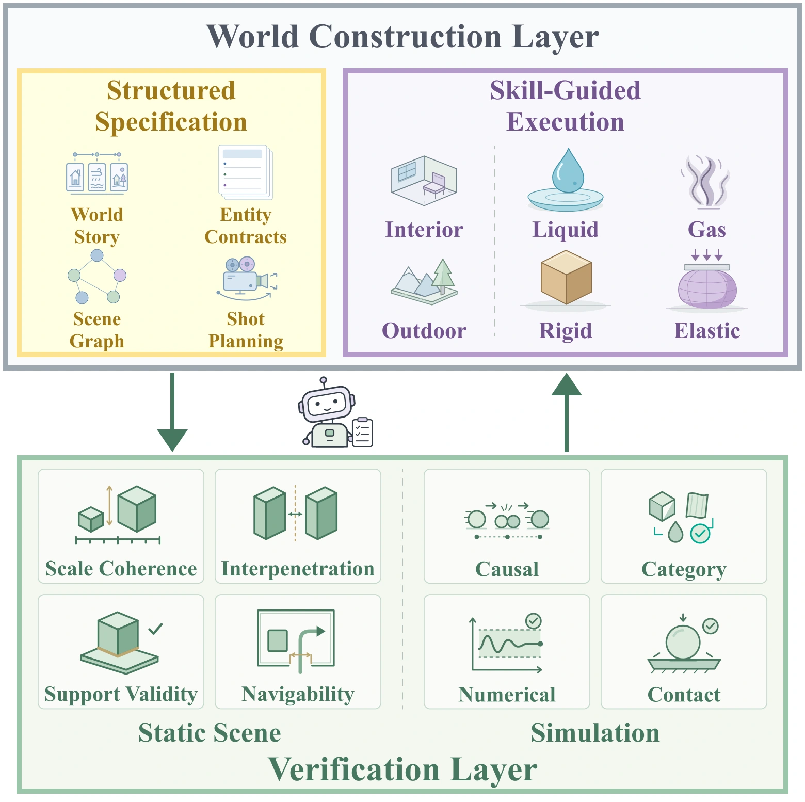

WorldAgent
Verification-Guided Agentic
Physical World Construction
Method

WorldAgent builds and simulates physical worlds from a single prompt, using geometric, visual, and simulation checks to guide automatic refinement.
Results
Video could not be loaded. Open video
Prompt A cinematic autumn valley with golden forests, slopes, rocks, streams, wooden bridges, cabins, and riverside grasslands. A stream flows downhill through rocky terrain, forming continuous small waterfalls, shallow pools, vortices, and recirculation. A small raft made of independently connected logs floats downstream, with slight relative motion and changing rope tension. The raft tilts and bobs through shallow water and briefly jumps when passing over small waterfalls.
Video could not be loaded. Open video
Prompt A richly detailed, photorealistic mountain river valley, featuring dense riparian vegetation and weathered rocks, with a naturally winding stream gradually eroding its banks. The flowing water continuously strikes the rocks, splitting, converging, surging, and swirling along the rocky banks and riverbed, creating persistent splashes, ripples, and localized eddies.
Video could not be loaded. Open video
Prompt A richly detailed, photorealistic mountain river valley, featuring dense riparian vegetation and weathered rocks, with a naturally winding stream gradually eroding its banks. The flowing water continuously strikes the rocks, splitting, converging, surging, and swirling along the rocky banks and riverbed, creating persistent splashes, ripples, and localized eddies.
Video could not be loaded. Open video
Prompt A dense, photorealistic forest, featuring trees of varying heights and trunk thicknesses, shrubs, rocks, moss, grassland, and a naturally winding mountain stream, with large numbers of fallen leaves of diverse shapes, sizes, and weights naturally drifting down from the tree canopy and entering the water.
Video could not be loaded. Open video
Prompt A large, photorealistic multi-story Brutalist public building organized around massive cantilevered slabs that function as real interior rooms, platforms, and public spaces, rather than isolated structural elements. The building features clearly articulated supports, reinforced-concrete cores and shear walls, multiple floors, staircases, doors, windows, floor slabs, classrooms, libraries, study areas, laboratories, studios, and an auditorium, furnished with desks, chairs, bookshelves, teaching equipment, and numerous loose objects. The entire structure undergoes intense earthquake motion, causing furniture, books, bottles, and classroom props to shake, slide, topple, collide, and fall throughout the building.
Video could not be loaded. Open video
Prompt A monumental medieval castle complex with massive stone walls, towers, gates, stone-paved roads, courtyards, and a surrounding moat. Large numbers of projectiles continuously approach along varied trajectories and densely bombard the walls, towers, and buildings, producing violent explosions, intense flashes, and large quantities of masonry debris. Impacts cause cracking, penetration, detachment, and localized collapse, while continued bombardment triggers cascading structural failures. Bricks, stones, tiles, and wooden beams scatter, tumble, collide, and accumulate under gravity, with some bricks falling into the moat. Explosions and collapsing structures generate dense smoke.
Video could not be loaded. Open video
Prompt A modern underground subway system with long tunnels, tracks, platforms, stairs, concourses, signaling equipment, lightboxes, ticket machines, and subway trains. Large volumes of floodwater suddenly surge into the tunnel and rapidly propagate. The flow splits, merges, recirculates, and accelerates around tracks, platforms, and stairs while gradually inundating low-lying areas. Lightweight objects such as trash bins, boxes, and plastic items are pushed, floated, rotated, and collided with walls and other objects by the rushing water.
Video could not be loaded. Open video
Prompt A majestic natural canyon with towering cliffs, a massive waterfall, a natural pool, streams, rocks, trees, moss, grass, and distant mountains. Large volumes of water continuously cascade into the pool, splitting, merging, splashing, recirculating, and forming localized vortices around complex rocky terrain before flowing downstream along the canyon.
Video could not be loaded. Open video
Prompt A spacious, finely designed modern restaurant with a coherent layout, featuring neatly arranged dining tables and chairs, a bar counter, kitchen window, dish cabinets, glass partitions, pendant lights, decorative plants, wine glasses, plates, utensils, bottles, and other rich interior details. Simulate an indoor earthquake that gradually intensifies from mild shaking, with sustained horizontal and vertical ground motion propagating through the building and producing realistic seismic responses in the furniture, objects, and architectural elements. The camera uses a first-person view, starting at the restaurant entrance and moving through the entire space at a natural walking pace, following the main pathways through the entrance area, main dining area, bar area, central open space, and platforms at different heights.
Video could not be loaded. Open video
Prompt A cinematic coastal environment with an open ocean, sandy beach, reefs, sea cliffs, lighthouse, wooden pier, coastal vegetation, and shallow waters. Large waves continuously propagate toward the shore, changing speed and shape in shallow water while flowing around reefs, breaking, splashing, and generating foam before surging onto the beach and forming visible backwash. Droplets and foam particles move with the waves, while receding water leaves dynamic wet regions and trails on the sand. Seaweed, planks, driftwood, and floating debris are naturally displaced by the waves.
Video could not be loaded. Open video
Prompt A grand vintage luxury hotel with a long, symmetrical red-carpeted corridor, towering walls, ornate woodwork, antique lamps, continuous doorways, columns, arches, and a deep vanishing point. A massive surge of deep crimson liquid bursts through the large double doors at the end of the corridor and continuously spreads across the floor. The liquid splits, merges, and recirculates as it flows around walls, thresholds, and columns. Scattered luggage, wooden furniture, papers, and other lightweight objects are pushed, slid, and rotated.
Comparison
Baseline comparisons
Video could not be loaded. Open video
Video could not be loaded. Open video
Video could not be loaded. Open video
Video could not be loaded. Open video
Video could not be loaded. Open video
Video could not be loaded. Open video
Prompt A dense, photorealistic forest, featuring trees of varying heights and trunk thicknesses, shrubs, rocks, moss, grassland, and a naturally winding mountain stream, with large numbers of fallen leaves of diverse shapes, sizes, and weights naturally drifting down from the tree canopy and entering the water.
AgenticSimBench
13 prompts · Green indicates best.
| Method / Metric | Physical plausibility | Shot planning | Content alignment | Aesthetics | |||
|---|---|---|---|---|---|---|---|
| Pen. ↓ | Caus. ↑ | Qual. ↑ | Comp. ↑ | Align. ↑ | Imag. ↑ | Prod. ↑ | |
| SWE-Agent | 0.3005 | 0.2862 | 0.5436 | 0.9423 | 16.2615 | 0.5635 | 0.7715 |
| Blender MCP | 0.9007 | 0.3223 | 0.5487 | 0.9038 | 15.6957 | 0.6730 | 0.7103 |
| VIGA | 0.1338 | 0.3152 | 0.4859 | 0.7500 | 16.0059 | 0.6739 | 0.7713 |
| Code2Worlds | 0.1148 | 0.0656 | 0.5051 | 0.5577 | 15.1408 | 0.5546 | 0.6587 |
| Ours (GPT-5.6 Sol) | 0.0613 | 0.4081 | 0.5962 | 1.0000 | 16.1757 | 0.6707 | 0.7866 |
| Wan 2.2 | — | 0.4692 | 0.5795 | 0.9615 | 15.2647 | 0.7070 | 0.9310 |
| MiniMax H3 | — | 0.5408 | 0.5256 | 0.9615 | 16.6525 | 0.7011 | 0.9220 |
| Ours (GPT-6 Astra) | 0.0415 | 0.6825 | 0.6042 | 1.0000 | 16.1225 | 0.7129 | 0.8319 |
Top: GPT-5.6 Sol agents. Bottom: video models vs. WorldAgent (GPT-6 Astra).
User study
26 participants · Ratings from 1 to 5.
| Method | Physical plausibility ↑ | Shot planning ↑ | Content alignment ↑ | Aesthetics ↑ |
|---|---|---|---|---|
| GPT-5.6 Sol | 2.226 | 2.811 | 2.578 | 2.293 |
| SWE-Agent | 2.503 | 3.005 | 2.946 | 2.692 |
| Blender MCP | 2.103 | 2.763 | 2.724 | 2.247 |
| VIGA | 2.196 | 2.255 | 2.560 | 2.636 |
| Code2Worlds | 2.491 | 2.241 | 2.203 | 2.369 |
| Ours (GPT-5.6 Sol) | 3.647 | 3.484 | 3.469 | 3.615 |
Language model backbone
GPT-5.6 Sol
Video could not be loaded. Open video
Video could not be loaded. Open video
GPT-6 Astra
Video could not be loaded. Open video
Video could not be loaded. Open video
Opus 5
Video could not be loaded. Open video
Video could not be loaded. Open video
Prompt A cinematic coastal environment with an open ocean, sandy beach, reefs, sea cliffs, lighthouse, wooden pier, coastal vegetation, and shallow waters. Large waves continuously propagate toward the shore, changing speed and shape in shallow water while flowing around reefs, breaking, splashing, and generating foam before surging onto the beach and forming visible backwash. Droplets and foam particles move with the waves, while receding water leaves dynamic wet regions and trails on the sand. Seaweed, planks, driftwood, and floating debris are naturally displaced by the waves.
Backbone comparison
| Method / Metric | Physical plausibility | Shot planning | Content alignment | Aesthetics | |||
|---|---|---|---|---|---|---|---|
| Pen. ↓ | Caus. ↑ | Qual. ↑ | Comp. ↑ | Align. ↑ | Imag. ↑ | Prod. ↑ | |
| GPT-5.6 Sol | 0.6747 | 0.3004 | 0.5038 | 0.7692 | 15.6923 | 0.5836 | 0.6419 |
| GPT-6 Astra | 0.2248 | 0.6031 | 0.5308 | 0.9615 | 16.2150 | 0.7296 | 0.8465 |
| Opus 5 | 0.8316 | 0.4255 | 0.5300 | 0.9500 | 17.4162 | 0.6368 | 0.8226 |
| Ours (GPT-5.6 Sol) | 0.0613 | 0.4081 | 0.5962 | 1.0000 | 16.1757 | 0.6707 | 0.7866 |
| Ours (GPT-6 Astra) | 0.0415 | 0.6825 | 0.6042 | 1.0000 | 16.1225 | 0.7129 | 0.8319 |
| Ours (Opus 5) | 0.2038 | 0.6638 | 0.6000 | 1.0000 | 17.6531 | 0.6505 | 0.8489 |